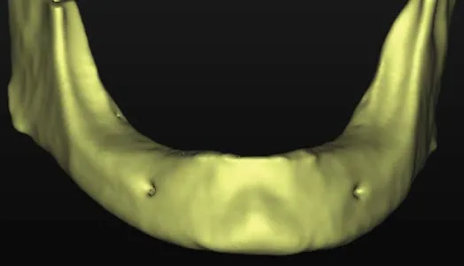

نسخه استخراجشده؛ ترجمه یا تأیید علمی انجام نشده است. وضعیت: captured
در ناحیهی خلفی مندیبل، ارتفاع قابل استفاده بهدلیل حضور کانال مندیبل کاهش مییابد؛ کانالی که تقریباً ۱۲ میلیمتر بالای لبهی تحتانی مندیبل قرار میگیرد.
عدد کلیدی این درس: حاشیهی ایمنی ۲ میلیمتر برای پیشگیری از نقص حسی. و قاعده: وقتی ایمپلنت ممکن است در فاصلهی ۲ میلیمتری عصب قرار بگیرد، موقعیت دقیق عصب و کانال باید با تصویربرداری سهبعدی مشخص شود.
و نکتهای دربارهی فورامن منتال: این فورامن اغلب ۲ میلیمتر یا بیشتر بالاتر از کانال نوروواسکولار قرار دارد — یعنی سطحی که در تصویر میبینی، لزوماً پایینترین نقطهی مسیر عصب نیست.
و لوپ قدامی: در برخی بیماران عصب پیش از خروج، جلوتر و پایینتر از فورامن میرود و بعد برمیگردد. در این حالت طول لوپ را به حاشیهی ۲ میلیمتری اضافه کن و فاصله را از جلوترین نقطهی لوپ بسنج، نه از لبهی فورامن.
خطای رایج این است که کانال را فقط بهعنوان یک ارتفاع ببینیم. اما کانال یک موقعیت باکولینگوال هم دارد و این موقعیت در طول مسیر تغییر میکند. رادیوگرافی دوبعدی این بُعد را نشان نمیدهد و فقط تصویر مقطعی آن را آشکار میکند. بزرگنمایی پانورامیک هم ناپایدار است و در یک بررسی ۸۳ درصد اندازههایش با مقدار واقعی نمیخواند؛ پس عدد پانورامیک برای سنجش حاشیهی ۲ میلیمتری قابل اتکا نیست.
پیامدش مستقیم است: ممکن است فاصلهی عمودی کافی داشته باشی ولی مسیر مته بهدلیل زاویه، از سمت باکال یا لینگوال به کانال نزدیک شود. ارزیابی باید سهبعدی باشد، نه یک عدد ارتفاع.
و ساختار دیگری که در ناحیهی خلفی باید بشناسی: عصب لینگوال. موقعیتش متغیر است و در برخی افراد به کرست بسیار نزدیک میشود — که آن را در برشهای لینگوال و هنگام طراحی فلپ به یک ملاحظهی جدی تبدیل میکند.
